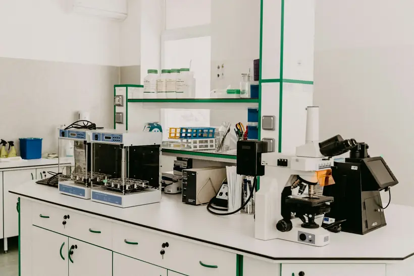

ISO/IEC 17065
Requirements for bodies that certify products, processes and services.
- Category
- Accreditation Support
- Typical time
- 9 – 12 months
- Who it's for
- Organisations establishing a product certification body.
What is ISO/IEC 17065?
Requirements for bodies that certify products, processes and services.
Who needs it: Organisations establishing a product certification body.
Requirements vary with the product, its intended use and where it will be sold. That is why every Vakane Engineering engagement starts with a short scoping call: we confirm whether ISO/IEC 17065 applies to you, which standard or scheme governs it, and the most efficient route to approval — before you commit to any testing or fees.
From there, a dedicated specialist manages the entire process — documentation, testing, applications, audits and every question from the issuing body — and keeps you updated weekly until the certificate is in your hands.
Why it matters.
What ISO/IEC 17065 does for your business beyond ticking a box.
Recognised competence
Results and certificates accepted by regulators and customers.
Regulatory eligibility
Many government schemes accept only accredited bodies.
International acceptance
Accreditation via ILAC/IAF agreements is recognised worldwide.
Stronger operations
Method validation, proficiency testing and audits raise technical quality.
Documents required.
A typical checklist. Your specialist will send a version tailored to your exact product and situation.
Scope and effort depend on
- The scope of accreditation
- Number of methods or services
- Existing quality system maturity
- Number of locations
- Quality manual and procedures aligned to the standard
- Scope of accreditation with methods and ranges
- Personnel qualification and authorisation records
- Equipment list, calibration and maintenance records
- Method validation and measurement uncertainty
- Proficiency testing or inter-lab comparison results
- Internal audit and management review records
How we get you there.
Indicative timeline. Actual timing depends on sample readiness, lab capacity and the issuing body.
Gap assessment
We review your facility, staff and methods against the standard.
Documentation
We build the quality system and technical records.
Technical readiness
Validation, uncertainty, proficiency testing and staff authorisation.
Internal audit
A complete internal audit and management review.
Application
We prepare and submit the application to the accreditation body.
Assessment
We support you through the assessment and close non-conformities.
Common questions about ISO/IEC 17065.
How long does ISO/IEC 17065 take?
Do you guarantee accreditation?
Can you help with scope extension?
You may also need.
NABL
Accreditation that proves your lab produces technically valid results, required for regulatory and many commercial tests.
Learn moreNABH
India's benchmark for patient safety and quality of care, increasingly linked to insurance empanelment.
Learn moreISO 15189
Quality and competence requirements for pathology and diagnostic labs.
Learn more
Let's get your ISO/IEC 17065 sorted.
Tell us what you make and where you want to sell it. You'll have a clear plan, timeline and fixed quote within one business day.